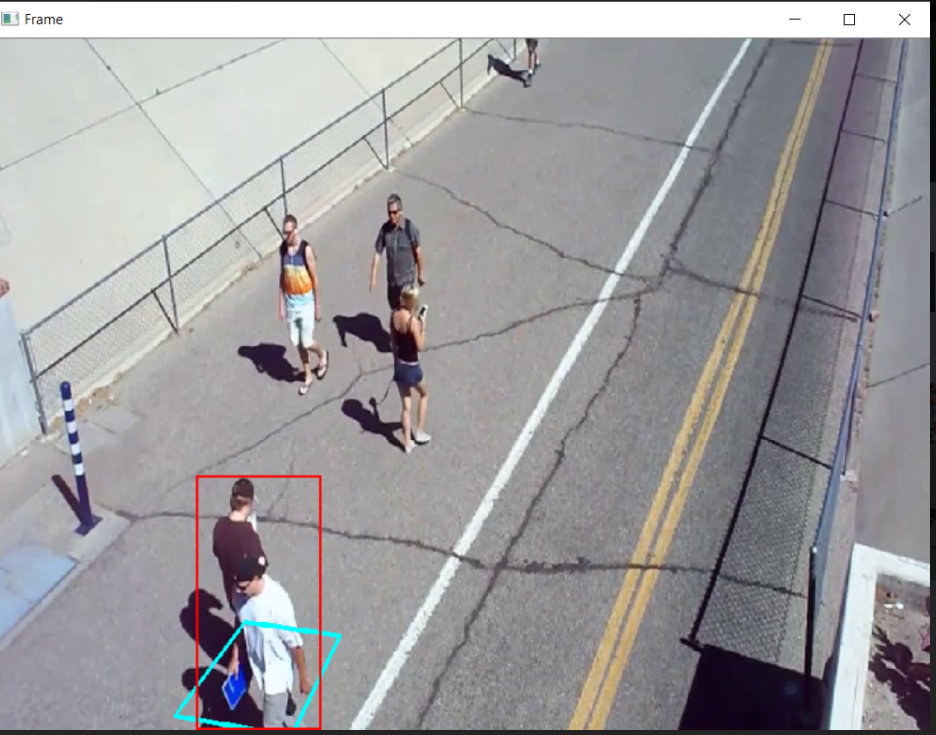
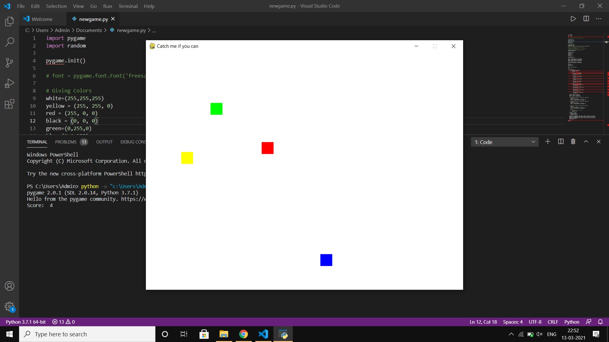

Janvi Raina
Software Engineer | Electronic Trading
I'm a software engineer at Wells Fargo, working on backend solutions for business workflows and automation in low-latency fixed-income trading.
What I Work On
- Experience in RFQ, offer flows, and trade persistence across IRS and UST markets.
- Developed automation frameworks for FX, IRS, UST, and post-trade flows (FIX & non-FIX).
- Optimized test efficiency, reduced execution times, and improved market data simulations.
- Contributed to system migrations (Java 8 → Java 17, Philly → Pico) ensuring seamless transitions.
- Focused on microservices, serialization, Solace-based messaging, and automation strategies.
Previously
Interned at Airpix, where I collaborated with a team of four to develop AI-powered real-time object detection models using YOLO.
Our work focused on monitoring social distancing and mask compliance, enhancing automated surveillance with intelligent vision systems.
Email /
Resume /
Github
|

|
Skills
-
Backend Development: Java, Spring Boot, Maven
-
Testing & CI/CD: JUnit, Mockito, Git, Jenkins
-
Messaging & Servers: Solace, Linux
-
Web Technologies: Python, Flask, HTML5, CSS, JavaScript
|
Projects & Side Work

QUIC vs TCP Performance Analysis
Developed an application using aioquic to analyze and compare QUIC and TCP protocols. Benchmarked key performance metrics—latency, throughput, and reliability.
View on GitHub

Intruder Detection System
Designed and implemented an AI-powered intruder detection system using YOLO for real-time object detection and alert generation.
View on GitHub

Catch A Thief Game
Developed a Python-based game where players must identify and catch the thief among a group of characters, enhancing pattern recognition skills.
View on GitHub
|
|
Outside of Work
When I’m not working on cool projects, I’m probably deep in a Reddit rabbit hole, lost in a good fiction book, experimenting in the kitchen, or overanalyzing marketing emails for fun.
I call these my 4Cs— 👩💻coding, ✍️copywriting, 👩🍳cooking, and 💭contemplating life’s biggest questions.
|
|